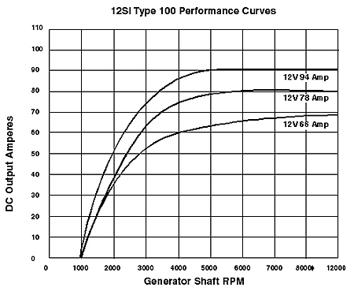
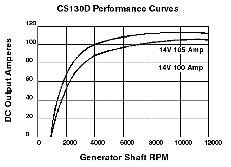

So you're thinking about altering the charging system in one way or another... Did you make sure your existing parts are all working? Don't touch anything until your present charging system has been completely tested by a qualified technician. (These tests should include testing with everything in the car turned on at various engine RPM. Preferably with the engine hot.)
If the battery, cabling or alternator you already have are crappy then you will have problems. If you swap the alternator and don't fix a wiring problem then you will continue to have issues with the new alternator. If you cram in a bigger alternator then it may temporarily give you more power but the defective wiring will continue to rot until the whole mess fails completely. Often with ugly and dangerous side effects.
The most common reasons for using something besides what came with the car...
Either of those is a good reason to change to a different alternator. The problem is that many people think all you need is the newer/bigger alternator. Many times they get away with it but there are plenty that don't. When the new alternator doesn't solve the problem, the world gains more bald car owners.
As Dorothy found out, when you screw with stuff you don't understand, you get stuck in Oz. Most people, even many professional auto service people, don't fully understand the charging system. It looks so simple and in many ways it is for day-to-day things. When you start talking about altering the system things become amazingly complicated Very Fast.
Before you alter the power system in any way, you've got to know how much juice a car is drinking. Throwing parts at it doesn't automatically solve your problem. You could actually make things worse. This includes changing pulleys as well as the alternator or battery.
Bigger is better? People assume that throwing in a larger alternator will always solve a power shortage. This simply isn't true. Even the biggest alternator available may not meet demand under all conditions. People constantly forget that the Peak rating usually quoted for an alternator often IS NOT the same as actual output.
And everyone, including me at times, forgets how the battery plays into this. It's not entirely dead weight once a car is running. There are times when the car pulls power off the battery even when the engine is running. A bad or undersized battery can affect all aspects of vehicle operation.
The things in this article are even more true of today's electric everything cars. Many cars today are tight on power right from the factory even with the largest alternators available. Adding high wattage aftermarket items to many current models can create major problems.
The right way to determine the load on the alternator and battery is to use a current probe and measure the actual loads under various conditions. That is time consuming and beyond what we need for this article. The fact is most people find out there is a problem because they keep sucking down the battery or frying alternators. (And they don't have the tools to do the testing anyway.)
Now a car obviously doesn't draw full output from the alternator at all times but there are times when it can draw that and more. Most cars can sustain this high load very easily. To make things more complicated, the alternator output is not constant and varies greatly between Idle and Peak. Most alternators are sized to peak above the maximum the car will use but they don't provide this amount full time. If the alternator can't meet demand then the power is sucked from the battery until either the load is reduced, the alternator is again spinning fast enough or the battery dies.
We want to figure a good heavy load so say it's a hot evening and you've got the AC on. It's getting late so you hit the lights. For simplicity we'll assume a factory installed alternator and new battery. Obviously if the battery is shabby it will simply magnify any problems. Using some quick info from Oliver's, AC Delco, and other sources, lets figure the following for a notch back:
| Load | Amps |
|---|---|
| Radiator Fan | 11 (1) |
| HL low beam | 8 |
| Park 8 lamps | 3.84 |
| Mark 4 lamps | 1.08 |
| Dash 12w | 0.9375 |
| AC low | 9 |
| Total | 32.9 |
Note
1. ACDelco Rad Fan Part # 15-8498 spec is 150 watts / 14 volt = 10.72 Amps.
In the table above we blow over 30 amps and that's not even all the stuff that's running. The dash only included the gauge back lighting. I left out the stuff in the radio, switches, etc that is probably a few more amps.
If the AC is on high, AC Delco says it typically draws 14 amps, which bumps the above total to 39 amps.
And we haven't even included the power the engine eats in the ECM, fuel system, ignition, and so on that is likely another 15-20 amps.
What's the V6 aux fan draw in those cars? 6-8 amps? More?
Hit the brakes? That's good for another 8 amps. It's not a constant load but it still counts.
A GT is going to be a little different from a 4 cyl notch back but as you can see, it's very easy to draw 45-50 amps just with stock components. Throw in any aftermarket stuff like stereo, fog lights, whatever, and you go up fast from there.
Everything in the car MUST fit in the parameters the charging system was built to. Keep in mind that most cars are built with the smallest alternator that will run the stock equipment without killing the battery at every traffic light. If you add power hungry stuff to the car, you may have to replace the alternator even if it's otherwise perfectly good.
The alternator and battery are a balancing act. When the alternator output drops below what the car needs, the rest of the power is pulled off the battery. Exactly when you run into a power shortage depends what you have turned on at any given time and how fast the Alternator is spinning.
Note: We're going to mention RPM in a second. Whenever you see "ARPM" we'll be talking about Alternator shaft RPM not Engine RPM.
AC Delco's technical notes indicate most alternators only produce 40% of their peak at idle. According to other AC Delco specs, most alternators don't peak until 5000-6500 ARPM. (GM specifies all peak numbers at 6500 ARPM regardless of when actual peak is reached.) The alternator in a stock setup is spinning about 2x Engine RPM. So if the engine idles at 850 RPM, the alt is spinning about 1600-1700 ARPM.
For an example, figure that the biggest stock 12-SI alternator with 94 amps peak only makes about 40 amps at 1600 ARPM and doesn't make peak output until about 5000 ARPM... (This is the biggest OE one in 85-87 V6.) Figuring the alt spins about 2X engine speed this means that you loosing alternator power any time the engine drops below about 2500RPM.
If you did something like install an "under drive" pulley, you could have an even bigger problem. Now the thing is turning even slower at idle and you will not be able to reach peak alternator output until higher engine RPM. When you figure most cars cruise the highway at 2200-2500 RPM, the under driven alternator may never make peak output under normal driving. (How much of a problem, if any, would depend on exactly how much you under drive the alternator.)
If you have the smaller 66 or 78 amp 12-SI then it gets even worse. At idle these alternators only make around 30 amps. Even in a non-AC car, these alternators may not keep up with even a few added amps of load. Under driving one could be suicide.
Update: Joe Guilbeau's Alternator Theory Page has most GM Alternators and Amp Charts.
This is important! Don't automatically assume that an alternator is too small because the car draws more than it makes at/near idle. It depends greatly on how much over you are AND how much you idle vs. cruise. If you are mostly cruising and hitting a few stoplights, you should never have a problem. If you often idle or creep along because of allot of heavy traffic then you might have something to worry about.
This is where an often-overlooked battery specification comes in handy. The "Reserve Capacity" rating of the battery tells you how long the battery can run a 25-amp load by itself without dropping dead. The main reason for the Reserve Capacity specification is to give you an idea of how far you can drive if the alternator croaks. Of coarse how far you will really get depends on various things but at least you know battery X might get you a little farther than battery Y. It's one more way you can compare two products against each other at the store. (In the U.S. this is standard across the industry.) This specification can also give you a rough idea of how long the car would be ok if you are some amount over the alternator output at idle.
Let's say you have a car that is over the alternator by 5 amps at idle. You've got a battery with a 60-minute Reserve Capacity specification. At this rate the car could idle for hours and not wipeout the battery. On the other hand, if you were way over you could have trouble in less than an hour. A battery with longer reserve capacity would buy you more time.
In the case where you are 5 amps over, you wouldn't need to increase alternator capacity. Most cars are at least this much over at idle. Many are more.
In cases where you are regularly wading thru traffic and pulling 20 amps or more than the alternator makes at idle then you might want to consider changing the battery, the alternator, or both.
Normally you wouldn't do that intentionally to most vehicles. The problem usually comes up when you are in traffic that is creeping along at 5-10 MPH. You could easily spend an hour or more in such traffic, which could be enough to kill the battery. When caught in sluggy traffic it's a really good idea to cut off auxiliary lights, big stereo systems, and anything else you don't need unless you are sure the charging system can handle it. (This even applies to many new vehicles!)
It might. Obviously there are physical limits on space but the "Reserve Capacity" specification can vary considerably between products even in batteries of the same "group." (Battery "Group" defines standardized physical properties for the case. OE Fiero uses Group 75 batteries.)
Again, it depends how far over you are at/near Idle. Up to 15-20 amps a battery with more "Reserve Capacity" may be all you need. Beyond that I'd consider a different alternator if one could be had.
If you were really pounding the system, a possible candidate would be the Optima Yellow top Starting battery (NOT the Yellow top Deep Cycle!) These are supposed to better handle this sort of situation and recover faster when the alternator spins up. Read about them at the links in the battery article.
Maybe or maybe not, but it gives you options the SI family can't in a package that is more reliable. It also depends what alternator you've got now. If you were repeatedly frying SI's or need something bigger then I'd seriously look into the CS 130 conversion instead of a bigger SI. There are limits on alternator output even in the aftermarket. If you've overloaded the car with aftermarket stuff then no alternator/battery combination may be big enough to stay alive long in slow traffic.
Compared to the 94-amp 12-SI, even though the 105 amp CS-130 has similar current available at idle, the CS is an all around better alternator than the 12-SI series. More importantly, the higher peak current of the CS-130 means that even when it's running below maximum, it's making more power than the 12-SI. For comparison, engine at idle, 2000 ARPM the 94 amp SI makes 50 amps and the 105-amp CS-130 makes about 70 amps.If you have one of the smaller 10-SI or 12-SI then the 105-amp CS-130 is going to blow the doors off it.
Look at 2000 RPM vs. Output Amps. 2000 is close to Pulley Ratio (Most are 2.5:1 - 2.6:1) x 900 Engine RPM. (I never found cs130 chart. cs130d is close for this example...)
 The CS units have an internal fan in addition to the external one. That means better cooling in the hot Fiero engine bay. Keep in mind that even if the heat doesn't kill the alternator outright, it will degrade performance and reduce available power. So when hot, the 12-SI may not be able to make even the paltry amperage it's rated for at low RPM. (This is why I said test when things are hot at the beginning.)
If the V6 engine has clearance for it, you can run the "iceberg" shell on the CS130 for even more cooling. If you can fit the Iceberg shell, you can also run the 140 amp CS130's available in the aftermarket.
On a side note: The change to the CS130 for 88 V6 is part of why GM felt safe deleting the expensive aux fan. The stupid aux fan wasn't running full time anyway while the CS has 2 full time fans built in. Plus the second built in fan cools without sucking amps. Even when an older Fiero is converted to CS, leave the aux fan operational. It will still cool the ignition coil and further cool the alternator when it runs.
Yes, and there are places where you can get smaller pulleys for the SI and CS alternators to make them spin faster. BUT! This has to be done carefully or you can over rev the alternator and blow it up at highway speeds. This option is really only for slow moving vehicles like farm equipment or delivery people in a big city. It won't help most people.
Selecting an alternator pulley is a little tricky. Alternators have a mechanical limit on how fast you can spin them. Factory pulleys are selected to allow decent current output during most driving without exceeding mechanical limits when the car is floored.
I've been unable to find the original ARPM specs for the SI and CS alternators. One unofficial number I found for a CS130 was 15000 ARPM. They didn't say if that was continuous or peak. It wouldn't surprise me if it were peak when you figure most stock engines rarely spin faster than 4000-5000 RPM. Most cruising is between 2000 and 3000 RPM meaning the SI and CS only need to survive 7000-10000 ARPM continuously. (For simplicity I've kept everything at 2:1 for this article but in the real world the alt may spin a little faster or slower that 2x crank RPM depending on the vehicle.)
Most people think that slowing down belt driven items adds HP. It doesn't actually add anything. Under driving is primarily an attempt to reduce waste. It's a little tricky to do right. Messing this up can hurt performance and may even cause damage.
You can easily amplify or cause a power shortage by installing under drive, AKA "Power," pulleys. If you slow down the alternator you also reduce it's output under most driving conditions. If the existing alternator is barely keeping up, slowing it down won't help anything. You can also create cooling system problems. The water pump needs to spin at a certain speed to keep the engine cool. Just how much problem you may create depends on exactly how much you under drive vs. how much power and water the car needs.
There are some places where slowing things down is good or even required. Keep these in mind... Once the alternator reaches peak power output, spinning it faster just wastes gas and HP. Spinning the Water Pump too fast can slow or even stop water flow thru the engine. (The water pump is just whipping foam at that point.) Mechanically, the Alternator, and the Water Pump, can croak quickly above certain shaft speeds.
Here are two of the most common examples...
Another common trick for a race setup where many options have been ripped out... Install a smaller alternator. A CS-121 for example could give you a decrease in rotating and total mass vs. a CS-130 or CS-144. There are some very small alternators available in the aftermarket.
In Fiero, the V6 is commonly under driven using a pulley from someone like Fiero Store. This isn't to bash a product, just to give you an idea how large an effect a seemingly small number can make.
The Fiero Store pulley claims a 24% under drive. That means when the alternator was spinning at 3000 ARPM... The new speed is 3000 ARPM - 720 ARPM (24%) = 2280 ARPM. That is a pretty significant drop in ARPM. If you are running the CS-130, where you were making 80 amps, now you're making around 60 amps.
Near Idle the situation is dismal. Keep in mind that most alternators don't even light until 1000 ARPM. If you idle at 1600 ARPM then... 1600 - 384 (24%) = 1216 ARPM. When you were at 2000 ARPM, now it will run 1520. This means near Idle you will be lucky to get even minimum amps from the alternator. You better have a really good battery or you won't last long in heavy traffic with big electrical loads.
To keep round numbers we'll use 5000 ARPM; GM spec peak is actually 6500 ARPM. This will at least give you the general idea. For fun, we'll run the numbers compared to both a 2:1 and a 2.5:1 OE pulley setup. (Exact size doesn't matter for this example.)
At 5000 APRM with 2:1 pulleys the engine was running 2500 RPM. If you apply the 24% to the pulley ratio, the FS setup has 1.52:1 pulleys, 2500 Crank RPM x 1.52 = 3800 ARPM. You won't hit 5000 ARPM until the engine cranks nearly 3300 RPM. In other words the alternator will almost never reach peak output in normal driving. You'll be lucky to get 50-60% of peak output most of the time.
To stay consistent with the rest of the article we have been assuming 2:1 for OE pulleys but say for giggles they are 2.5:1. That means an engine at 2500 RPM would spin the alternator 6250. A 24% pulley drop gives us 1.9:1 or 4750 ARPM. In this case you slowed the alternator but you get allot closer to reaching peak output at normal RPM. In this case you'd see 5000 ARPM at 2630 on the crank. You could still have trouble near idle.
As bad as this may sound, not everyone will have a problem under driving an alternator. It all depends on the exact pulleys involved, what alternator is in the car, how/where the car is driven and how big an electrical load is on the system.
You've also got to be certain the cooling system is in excellent working order. If you have an iffy cooling system slowing down the coolant flow could make minor problems worse.
Will you make more power to the wheels? Maybe, but if you don't have enough electrical power you'll defiantly have other problems. Low power can screw up operation of the ECM, Ignition, and all sorts of other things. Before you install one of these things make certain you aren't tight on power. If you have to deal with allot of slow traffic I would not recommend the use of a power pulley, especially in a car with AC and other high amp loads.
Side note: I think the FS pulley also slows the AC compressor. This could cut AC performance. Just how much that matters will probably depend on where you live.
In a normal car, the battery provides plenty of power to handle spikes from switching accessories on and off but there is an application that causes major problems for charging systems. The use of high power audio equipment can drive the car completely nuts. The worst problems are high wattage bass and sub bass amplifiers.
The load from a big audio system can quickly drain and even damage the charging system. Every time the bass thumps your ears, it thumps the charging system as well. The constant beating can also cause ECM/PCM errors and other performance problems with the car. To reduce these problems, many audio shops will install one or more large "Electrolytic capacitors."
For our purposes, Capacitors work similar to the battery but they can respond to load spikes much faster. (This article is long enough without the details.) They are a valid solution to the problems caused by audio systems. What the audio guys fail to tell people is that capacitors are dangerous, especially when poorly made or installed. (I doubt many audio shops even know any of this.)
As long as you install them carefully and treat them well, capacitors shouldn't give you any problems.
Hooking up one or two capacitors is fairly easy. If you are building/installing banks of capacitors get help from someone and make sure you won't set the car on fire if there is a problem.